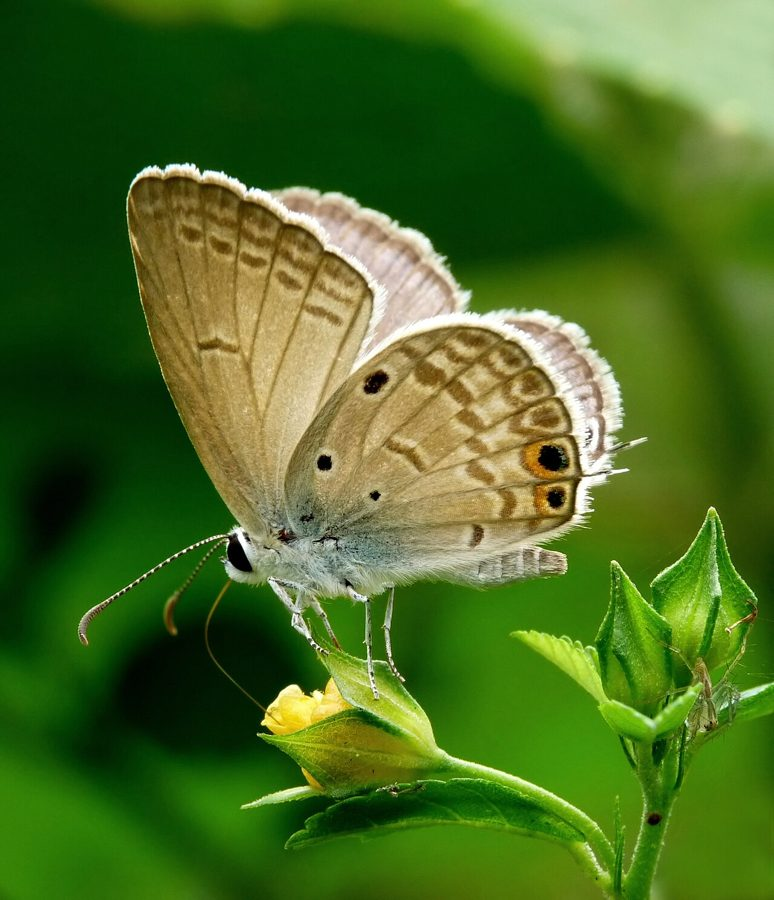

ग्राम ब्लू तितलीGram Blue
Euchrysops cnejus · Lycaenidae · INS-0130

- Scientific name वैज्ञानिक नाम
- Euchrysops cnejus (Fabricius, 1798)
- Family कुल
- Lycaenidae
- Hindi हिंदी
- ग्राम ब्लू तितली
- Local names स्थानीय नाम
- gram blue, blue
- Status here यहाँ की स्थिति
- native
- Movement आवागमन
- Resident, here all year
- Known from कहाँ दर्ज
- Others have published records from the wider Awadh–Purvanchal plain, none yet from Basti–Ayodhya अवध–पूर्वांचल से दूसरों के प्रकाशित अभिलेख, बस्ती–अयोध्या से अभी नहीं
- IUCN IUCN
- not evaluated
- Review समीक्षा
- audited and independently read
When to look कब देखें
Present all year. साल भर मौजूद।
Tell it apart from इनसे अलग पहचानें
ग्राम ब्लू तितली / Gram Blue
Euchrysops cnejus (Fabricius, 1798) — Lycaenidae
ग्राम ब्लू तितली — यह एक छोटी नीली तितली है जो गाँवों के चने (gram) और लोबिया (cowpea) की खेतों में आम तौर पर देखी जाती है। इसके नर के पंख नीले होते हैं और मादा के पंख भूरे होते हैं। इसके पंखों के नीचे (ventral) हल्के रंग के होते हैं जिन पर छोटे काले धब्बे होते हैं। यह तितली रबी (सर्दी) की फ़सल के समय बहुत ज्यादा संख्या में पाई जाती है। इसकी इल्ली चने, लोबिया और अन्य दलहन (pulses) के पौधों को नुकसान पहुँचाती है।
Quick Identification त्वरित पहचान
| Feature | Description |
|---|---|
| Wingspan | Small; 24–30 mm |
| Male dorsal | Bright blue wings |
| Female dorsal | Greyish-brown or dusky |
| Ventral surface | Pale white or cream with small black spots |
| Hindwing spots | Black spots without prominent red color (unlike Plains Cupid) |
| Flight | Weak, fluttering; stays low over crops |
Field tip: Look for small blue butterflies in gram and lobia fields. Males are bright blue; females are brownish. Commonly seen in rabi season (November–February) hovering over pulse crops.
हिंदी — कैसे पहचानें: छोटी नीली तितली, चने की खेतों में, सर्दी में आम।
Morphology आकारिकी
Biometrics:
| Measurement | Range |
|---|---|
| Adult wingspan | 24–30 mm |
| Body length | 10–13 mm |
| Forewing length | 11–14 mm |
| Caterpillar length (mature) | 12–16 mm |
Adult butterfly: Small. Males have bright blue upper wings; females are greyish-brown or dusky. Ventral surface is pale white or cream with small black spots arranged in a characteristic pattern. No prominent red spots.
Caterpillar: Green or yellowish-green, small, feeding on pulse plants.
Behaviour & Ecology व्यवहार और पारिस्थितिकी
The Gram Blue is a small butterfly closely associated with pulse crop fields, particularly gram (chickpea) and cowpea. It flies weakly, staying low over crops. Males perch on plants, waiting for females. The species shows peak abundance during the rabi (winter) season when pulse crops are growing and flowering. It is a familiar insect in Basti district's agricultural landscape.
Life Cycle / Phenology जीवन चक्र
| Stage / Season | Event |
|---|---|
| Egg | Laid on host plant flowers and buds; hatches in 3–5 days |
| Larva (caterpillar) | Green or yellow-green; 3 instars; develops over 8–12 days |
| Pupa | Small chrysalis on host plant; emerges in 6–9 days |
| Adult | Year-round; peak October–February; multiple generations during rabi |
Host Plants or Prey आहार
Larval host plants (Leguminosae/Fabaceae):
- Gram (chickpea) (Cicer arietinum)
- Cowpea (Vigna unguiculata)
- Pigeon pea (Cajanus cajan)
- Other pulse crops
Adult nectar sources:
- Pulse crop flowers
- Wildflowers in field margins
Predators / Natural Enemies शत्रु
- Spiders: Jumping spiders and web spiders in crops
- Small birds: Hunt flying adults
- Parasitoid wasps: Attack caterpillars and pupae
- Predatory beetles: Feed on eggs and small caterpillars
Agricultural / Human Relevance कृषि प्रासंगिकता
Pulse crop pest. The caterpillar damages gram, cowpea, and other pulse crops by feeding on flowers, buds, and developing seeds, reducing yield. The species is economically important in pulse-growing regions.
Pollinator service. Adults pollinate pulse crop flowers while feeding on nectar.
Expected Locally स्थानीय रूप से अपेक्षित
Not a field record. Written from published accounts for eastern Uttar Pradesh. No confirmed local sighting yet — if you have seen it, that is what the atlas needs.
अभी तक स्थानीय पुष्टि नहीं। यह विवरण प्रकाशित स्रोतों से है, किसी अवलोकन से नहीं।
The species is expected year-round throughout Basti district, with peak abundance October–February during the rabi (winter) season when pulse crops are grown. Look for small blue butterflies hovering over gram and cowpea fields. Common in pulse-growing areas. A photograph with date and location would confirm a local record.
Distribution वितरण
Global range: South Asia, particularly India, extending to Southeast Asia.
In India: Distributed throughout the subcontinent, particularly in pulse-growing regions.
In Uttar Pradesh: Common in all pulse-growing areas, particularly in rabi season.
In Basti district / eastern UP: Common October–February in gram and pulse fields.
Research Questions शोध प्रश्न
Anyone can investigate these | कोई भी इन प्रश्नों की जाँच कर सकता है
- How many Gram Blue caterpillars can damage a single gram plant before flowering? / एक चने के पौधे को कितनी इल्लियाँ नुकसान पहुँचा सकती हैं? — Monitor caterpillar damage on plants with known larval densities.
- What is the economic threshold for Gram Blue control in gram crops of Basti? — Determine the number of caterpillars that justify control measures.
- How many generations of Gram Blue occur during the gram-growing season (October–March)? — Track emergence dates and population peaks.
- Do pesticide-free methods (handpicking, netting) reduce Gram Blue damage in gram crops? — Compare damage in treated and control plots.
- What percentage of Gram Blue pupae are parasitized by natural enemies in Basti gram fields? — Collect and rear pupae; record parasitoid emergence.
Similar Species मिलती-जुलती प्रजातियाँ
| Species | How to tell apart | हिंदी | |
|---|---|---|---|
| [[plains_cupid\ | Plains Cupid]] (Luthrodes pandava) | Has prominent red spot on hindwing underside; slightly larger | मैदानों का कामदेव — लाल धब्बा |
| [[pea_blue\ | Pea Blue]] (Lampides boeticus) | Larger; two red spots on hindwing; two tails on hindwing | मटर नीली — दो लाल धब्बे, पूँछ |
Field rule: A small bright blue butterfly (males) or brownish (females), with small black spots on pale underside but no prominent red spots, hovering over gram and pulse crops in winter, is the Gram Blue.
Taxonomy & Classification वर्गीकरण
Original description. Described by Fabricius in 1798 from Indian specimens. The genus Euchrysops comprises small blue butterflies of Africa and Asia.
Subspecies. The nominate subspecies E. c. cnejus occurs throughout South Asia.
Family and order placement. Order Lepidoptera, family Lycaenidae (blues, coppers, hairstreaks).
Phylogenetic notes. Euchrysops is an Old World genus of small blues; E. cnejus is the Indian representative closely associated with pulse crops.
IUCN status rationale. Not evaluated. Common and widespread with stable populations, increasing with pulse cultivation.
Photo Gallery फोटो गैलरी
No photos yet — add field photos to media/species/gram_blue/ and run node scripts/sync_photos.js.
Photos needed आवश्यक फोटो
- [ ] Male on gram plant (नर — चने के पौधे पर)
- [ ] Female (मादा — भूरी)
- [ ] Caterpillar on gram flower (इल्ली)
References संदर्भ
- Fabricius, J.C. (1798). Supplementum Entomologiae Systematicae. Copenhagen.
- Bingham, C.T. (1907). The Fauna of British India, including Ceylon and Burma. Butterflies. Vol. 2. Taylor & Francis, London.
- Kehimkar, I. (2008). The Book of Indian Butterflies. Bombay Natural History Society, Mumbai.
- Kunte, K. (2000). Butterflies of Peninsular India. Universities Press, Hyderabad.
- Mishra, M.K., Sharma, D.C. & Bhardwaj, P.C. (2002). Pest Management in Pulse Crops. ICAR, New Delhi.
- GBIF Occurrence Data — Euchrysops cnejus, India (2010–2025).
Source file: species/fauna/insects/gram_blue.md